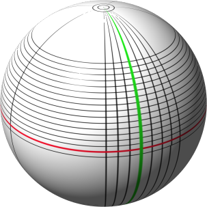
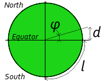
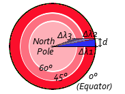

Introduction
One key element of Twetailer/Lusanga concept is the locality: actors contact the hub to get information about products and services in their area.
For sure, the coordinates of the area can be dynamically specified, as the range to consider around the area center.
Here is a scenario Twetailer will be able to serve:
- A politician working Montreal downtown needs to call a cab to go to the airport.
- He contacts Twetailer with the following request: #taxi YUL airport loc: H3C 2N6 CA.
- Almost immediately, two drivers from nearby stations reply and their proposals are forwarded to the politician.
- The man picks one, confirms the proposal, and goes into the street to take the cab.
- Knowing his meeting is Ottawa downtown, he wants to bring back one of the famous "Obama's maple leaf cookie".
- Because he does not remember the exact store, he queries Twetailer with: "Obama cookie market loc:Ottawa CA".
- Twetailer forwards the response from the baker Claude Bonnet: "Obama Maple Leaf Cookie Byward Market price:$8.50 store:32443".
- Once out of his meeting, the visitor will just have to send "!list store:32443: to get the exact store coordinates ;)
Location resolution from a postal code
Location resolution from a city name
Computation of the area around a location
The following picture illustrates the globe with the latitude (horizontal lines, like the red one)
and the longitude (vertical lines, like the green one).

Illustration of the latitude and longitude on the globe
By convention:
-
The latitude is the angle from a point on the Earth's surface to the equatorial plane. At the Equator (red line), the latitude is 0°.
On the North pole, the latitude is 90° and on the South pole it is -90°.
-
The longitude is the angle east or west of a reference meridian (vertical line). The Prime meridian green line)
passing in the back of the Royal Observatory, Greenwich (near London in UK) is the zero-longitude reference.
For its computing algorithm, Twetailer uses the following approximation:
- 59 km on a longitude line means a variation of 0.53° of latitude.
- l = 40,075 km / 4 = 10,018.75 km
- sin(φ) = l / d = 59 / 10.018,75
- φ = arcsin(59 / 10.018.75) = 0.53°
- 59 km on the Equator line means a variation of 0.53° of longitude.
- Greater is the latitude, more degrees on the longitude are covered by this 59 km distance.
- 360° is the maximum longitude range covered.
- Near the North pole, these 360° can be covered with a little distance.
- The covered distance is relative to the latitude : λ = arcsin(59 / 10.018.75) * cos(φ)
- λ1 = 0.53° * cos(0°) = 0.53°
- λ2 = 0.53° * cos(45°) = 0.75°
- λ3 = 0.53° * cos(60°) = 1.06°